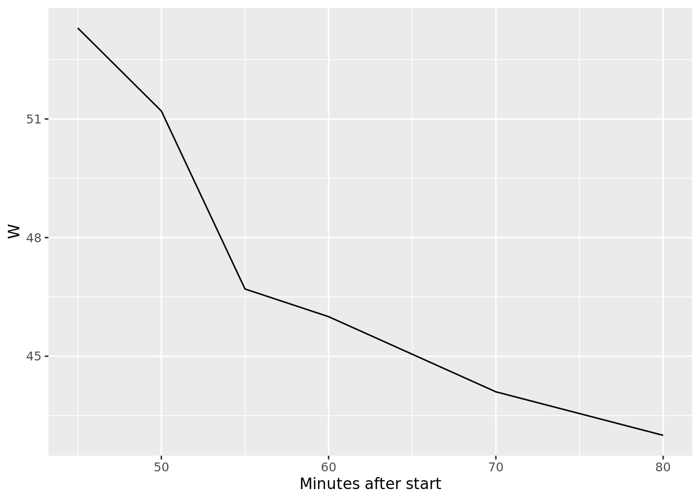
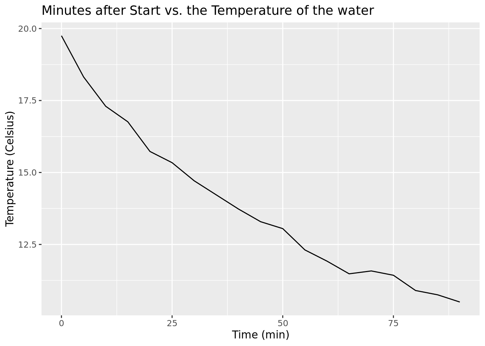
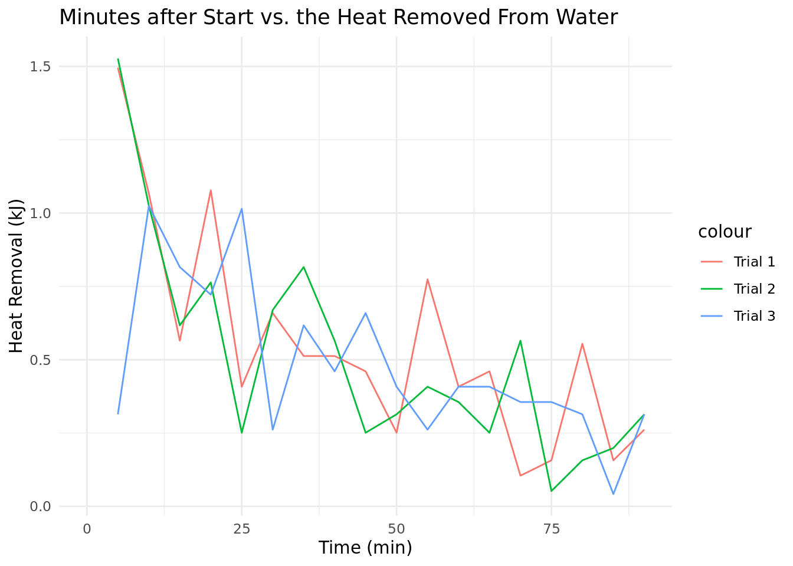
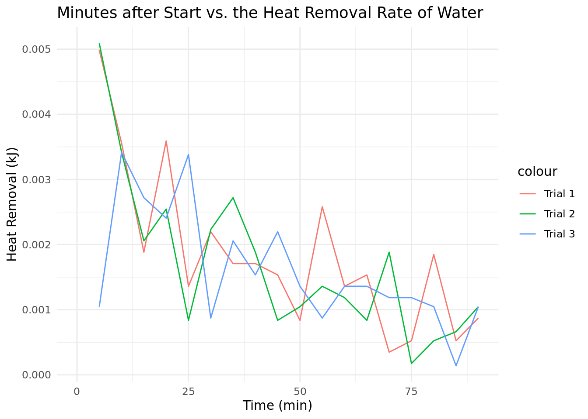
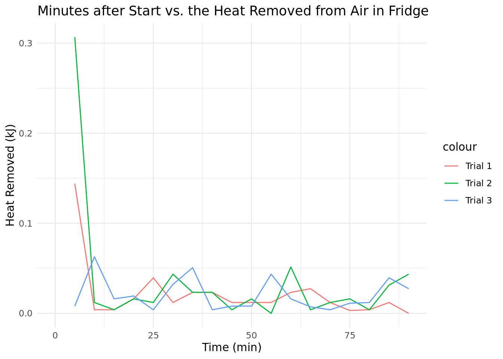
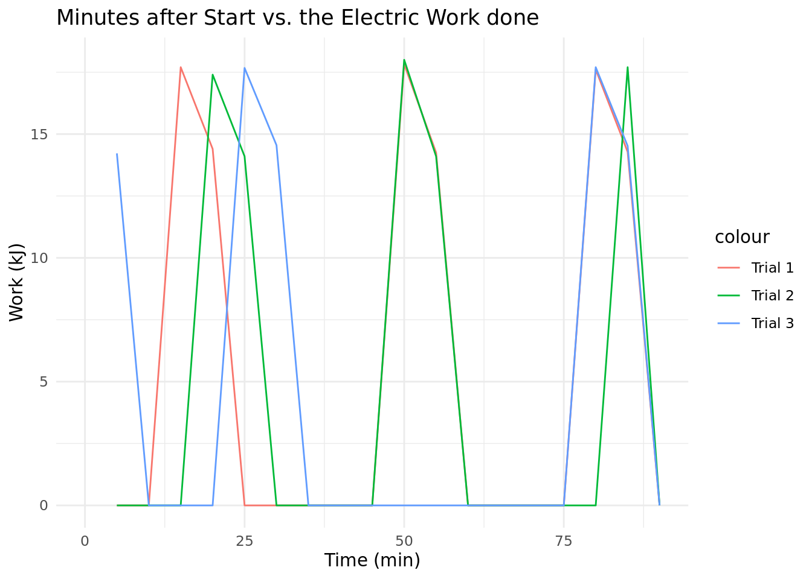

library(tidyverse)
library(tidymodels)
library(dplyr)Dorm Fridge Data Analysis
ME 331: Thermodynamics Spring 2026
Introduction
This is the data analysis for the data acquired from the Arduino for Spring 2026’s ME 331 group Home Fridge.
Baseline Data
First, the team imports important libraries. This includes tidyverse, a rudimentary package for statistical analysis, and tidymodels, a beginner-friendly package for statistical modeling.
After importing these libraries, the team imported the data. The data is broken into two key chunks: the baseline data (thermo_baseline.csv) and the data collected over hours (trial1.csv, trial2.csv, trial3.csv).
baseline <- read_csv("thermo_baseline.csv", show_col_types = FALSE)
baseline <- baseline |>
select(where(~ !all(is.na(.)))) |>
rename(time = `Minutes after start`)
trial1 <- read_csv("trial1.csv", col_types = cols_only(
`Minutes after start` = col_double(),
`W` = col_double(),
`temp in fridge` = col_double(),
`temp in water` = col_double(),
`temp in air` = col_double()),
show_col_types = FALSE,
name_repair = "unique_quiet") |>
rename(time = `Minutes after start`,
tfrid = `temp in fridge`,
tw = `temp in water`,
ta = `temp in air`,
w_dot = `W`)
trial2 <- read_csv("trial2.csv", col_types = cols_only(
`Minutes after start` = col_double(),
W = col_double(),
`temp in fridge` = col_double(),
`temp in water` = col_double(),
`temp in air` = col_double()),
show_col_types = FALSE,
name_repair = "unique_quiet") |>
rename(time = `Minutes after start`,
tfrid = `temp in fridge`,
tw = `temp in water`,
ta = `temp in air`,
w_dot = W)
trial3 <- read_csv("trial3.csv", col_types = cols_only(
`Minutes after start` = col_double(),
W = col_double(),
`temp in fridge` = col_double(),
`temp in water` = col_double(),
`temp in air` = col_double()),
show_col_types = FALSE,
name_repair = "unique_quiet") |>
rename(time = `Minutes after start`,
tfrid = `temp in fridge`,
tw = `temp in water`,
ta = `temp in air`,
w_dot = W)
trial1# A tibble: 19 × 5
time w_dot tfrid tw ta
<dbl> <dbl> <dbl> <dbl> <dbl>
1 0 NA 11.3 19.8 20
2 5 NA 9.55 18.3 19.9
3 10 NA 9.6 17.3 19.8
4 15 59 9.65 16.8 19.9
5 20 48 9.45 15.7 20
6 25 NA 8.96 15.3 19.9
7 30 NA 9.11 14.7 20
8 35 NA 9.4 14.2 19.8
9 40 NA 9.11 13.7 20.1
10 45 NA 9.26 13.3 19.8
11 50 59.4 9.11 13.0 19.8
12 55 47.5 8.96 12.3 20.0
13 60 NA 8.67 11.9 20.0
14 65 NA 9.01 11.5 20
15 70 NA 8.86 11.6 20.1
16 75 NA 8.82 11.4 19.6
17 80 58.7 8.77 10.9 19.7
18 85 47.6 8.62 10.8 20.0
19 90 NA 8.62 10.5 NA Cleaning Process
The team then cleaned out the dataset so it only reflected the moments where the compressor in the fridge was using power, rather than the total data collection time, as many values for work rate (power) are 0.
baseline_filt <- baseline |>
filter(`W` != 0)
baseline_filt# A tibble: 6 × 5
time volts kwh hz W
<dbl> <dbl> <dbl> <dbl> <dbl>
1 45 121. 0 60 53.3
2 50 121 0 59.9 51.2
3 55 121. 0 59.9 46.7
4 60 121. 0 60 46
5 70 121. 0.01 60 44.1
6 80 121 0.02 60 43 Plotting Baseline Data
Next, the team made two plots: minutes after start vs. W (work) and minutes after start vs. volts. Figure 1 is the first plot.
ggplot(baseline_filt, aes(x = time, y = W)) +
geom_line() +
geom_point(color = "red") +
labs(title = "Minutes after Start vs. the Power from the Wall Unit Over 90 Minutes",
subtitle = "The power the compressor takes in in 5 minute bursts over time",
x_label = "Time (min)",
y_lab = "Power (Watts)")
Using Water Dish
After a clear idea, the team plotted the temperature of the air outside the fridge, water, and the air inside the fridge.
ggplot(trial1, aes(x = `time`)) +
# geom_line(aes(y = `tfrid`)) +
geom_line(aes(y = `tw`)) +
#geom_line(aes(y = `ta`)) +
labs(title = "Minutes after Start vs. the Temperature of the water",
x = "Time (min)",
y = "Temperature (Celsius)")
Then, using the equation for heat transfer:
\[ \dot{Q} = \dot{m}c_v\Delta{T} \]
By assuming that the heat transfer from the water is the same as the heat transferred into the refrigerator air, we can just observe the change in temperature of the water and then extrapolate those values for the fridge. The mass of the water is determined from the volume of the container, 250mL, and the density of water, which is 1 kg/m3.
So it would be:
\[ m = V \times\rho_w \]
Which in this case yields
\[m\] = 0.25 kg. We use this to find the heat lost from the water due to refrigeration, which will then be divided by the time taken, to find the heat removal rate. Below is the heat removal rate and the heat removed.
q_water_1 <- trial1 |>
mutate(
q_w = abs(0.25 * 4.184 * (tw - lag(tw))),
q_w_dot = q_w/((time - lag(time)) * 60)
)
q_water_2 <- trial2 |>
mutate(
q_w = abs(0.25 * 4.184 * (tw - lag(tw))),
q_w_dot = q_w/((time - lag(time)) * 60)
)
q_water_3 <- trial3 |>
mutate(
q_w = abs(0.25 * 4.184 * (tw - lag(tw))),
q_w_dot = q_w/((time - lag(time)) * 60)
)When this is graphed out:
ggplot() +
geom_line(data = q_water_1, aes(x = time, y = q_w, color = "Trial 1")) +
geom_line(data = q_water_2, aes(x = time, y = q_w, color = "Trial 2")) +
geom_line(data = q_water_3, aes(x = time, y = q_w, color = "Trial 3")) +
labs(title = "Minutes after Start vs. the Heat Removed From Water",
x = "Time (min)",
y = "Heat Removal (kJ)") +
theme_minimal()
ggplot() +
geom_line(data = q_water_1, aes(x = time, y = q_w_dot, color = "Trial 1")) +
geom_line(data = q_water_2, aes(x = time, y = q_w_dot, color = "Trial 2")) +
geom_line(data = q_water_3, aes(x = time, y = q_w_dot, color = "Trial 3")) +
labs(title = "Minutes after Start vs. the Heat Removal Rate of Water",
x = "Time (min)",
y = "Heat Removal (kJ)") +
theme_minimal()
We do the same for the air inside the fridge. To find the \[\dot{Q_a}\] , we use the specific heat value of dry air, 1005 J/kg, assuming that there is only dry air in the fridge. We use the same formula as above to determine \[\dot{Q}\]. To determine the mass of the air, we used the same thing as above: the volume of the fridge multiplied by the density of dry air, which ended up being 2.2 feet3, which is 0.062 m3. With the dry air density being 1.293 kg/m3 at standard state, the mass becomes 0.0801 kg. Something similar is done for the ambient air outside to make sure all the heat in the system is addressed.
q_frid1 <- trial1 |>
mutate(q_f = abs(0.0801 * (tfrid - lag(tfrid)) * 1.005)) |>
mutate(q_f_dot = q_f/((time - lag(time)) * 60))
q_frid2 <- trial2 |>
mutate(q_f = abs(0.0801 * (tfrid - lag(tfrid)) * 1.005)) |>
mutate(q_f_dot = q_f/((time - lag(time)) * 60))
q_frid3 <- trial3 |>
mutate(q_f = abs(0.0801 * (tfrid - lag(tfrid)) * 1.005)) |>
mutate(q_f_dot = q_f/((time - lag(time)) * 60))Plotted this out:
ggplot() +
geom_line(data = q_frid1, aes(x = time, y = q_f, color = "Trial 1")) +
geom_line(data = q_frid2, aes(x = time, y = q_f, color = "Trial 2")) +
geom_line(data = q_frid3, aes(x = time, y = q_f, color = "Trial 3")) +
labs(title = "Minutes after Start vs. the Heat Removed from Air in Fridge",
x = "Time (min)",
y = "Heat Removed (kJ)") +
theme_minimal()
The total work is found through integrating the work rate (power) by time.
w1 <- trial1 |>
mutate (w_dot = replace_na(w_dot, 0)) |>
mutate(w = w_dot * (time - lag(time)) * 60 * 0.001) |> #makes this in kJ
select(time, w, w_dot)
w2 <- trial2 |>
mutate (w_dot = replace_na(w_dot, 0)) |>
mutate(w = w_dot * (time - lag(time)) * 60 * 0.001) |>
select (time, w, w_dot)
w3 <- trial3 |>
mutate (w_dot = replace_na(w_dot, 0)) |>
mutate(w = w_dot * (time - lag(time)) * 60 * 0.001) |>
select (time, w, w_dot)
w1# A tibble: 19 × 3
time w w_dot
<dbl> <dbl> <dbl>
1 0 NA 0
2 5 0 0
3 10 0 0
4 15 17.7 59
5 20 14.4 48
6 25 0 0
7 30 0 0
8 35 0 0
9 40 0 0
10 45 0 0
11 50 17.8 59.4
12 55 14.2 47.5
13 60 0 0
14 65 0 0
15 70 0 0
16 75 0 0
17 80 17.6 58.7
18 85 14.3 47.6
19 90 0 0 Plot work:
ggplot() +
geom_line(data = w1, aes(x = time, y = w, color = "Trial 1")) +
geom_line(data = w2, aes(x = time, y = w, color = "Trial 2")) +
geom_line(data = w3, aes(x = time, y = w, color = "Trial 3")) +
labs(title = "Minutes after Start vs. the Electric Work done",
x = "Time (min)",
y = "Work (kJ)") +
theme_minimal()
Putting all the data together:
combined_q_1 <- q_water_1 |>
full_join(q_frid1, by="time") |>
full_join(w1, by="time") |>
mutate(trial = "Trial 1") |>
select(time, w_dot, w, q_f, q_f_dot, q_w_dot, q_w, trial)
combined_q_2 <- q_water_2 |>
full_join(q_frid2, by="time") |>
full_join(w2, by="time") |>
mutate(trial = "Trial 2") |>
select(time, w_dot, w, q_f, q_f_dot, q_w_dot, q_w, trial)
combined_q_3 <- q_water_3 |>
full_join(q_frid3, by="time") |>
full_join(w3, by="time") |>
mutate(trial = "Trial 3") |>
select(time, w_dot, w, q_f, q_f_dot, q_w_dot, q_w, trial)
all <- bind_rows(combined_q_1, combined_q_2, combined_q_3)
all[is.na(all)] <- 0all|>
group_by(trial)|>
summarize(q_total = sum(q_w_dot), q_lost_w = mean(q_w))# A tibble: 3 × 3
trial q_total q_lost_w
<chr> <dbl> <dbl>
1 Trial 1 0.0329 0.520
2 Trial 2 0.0303 0.479
3 Trial 3 0.0292 0.461Using the first law of thermodynamics:
\[ Q - W~=~m\times\Delta{h} \]
where \[{m}\] is 0 due to mass conservation, in an ideal scenario, the \[Q\] equals the \[W\]. Thus, we combine \[{Q_w}\] with \[Q_a\] to find \[Q_t\], which is the total heat removed from the system due to the fridge. We do the same for the work to determine the total work and total heat per trial
total_q <- all |>
group_by(trial) |>
summarise(
q_f_total = sum(q_f, na.rm = TRUE),
q_w_total = sum(q_w, na.rm = TRUE),
qt = sum(q_f, na.rm = TRUE) + sum(q_w, na.rm = TRUE),
wt = sum(w, na.rm = TRUE))
total_q# A tibble: 3 × 5
trial q_f_total q_w_total qt wt
<chr> <dbl> <dbl> <dbl> <dbl>
1 Trial 1 0.385 9.88 10.3 96.1
2 Trial 2 0.624 9.10 9.72 81.3
3 Trial 3 0.374 8.76 9.13 78.7After finding \[Q_t\], we find the coefficient of performance (COP) using the formula:
\[ COP~=~Q_{total}/W_{cycle} \]
total_q |>
summarise(cop = abs(qt)/wt, avg_cop = mean(cop))# A tibble: 3 × 2
cop avg_cop
<dbl> <dbl>
1 0.107 0.114
2 0.120 0.114
3 0.116 0.114